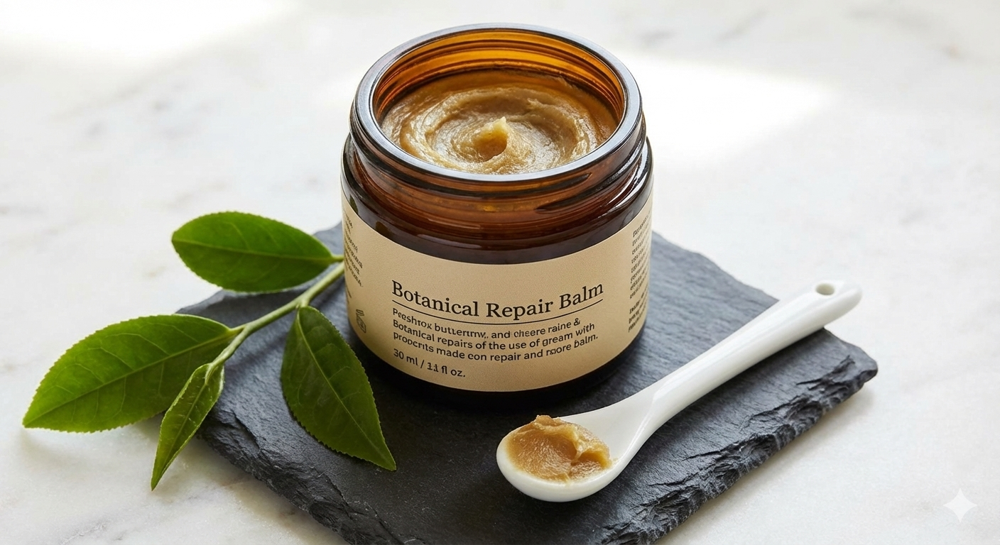
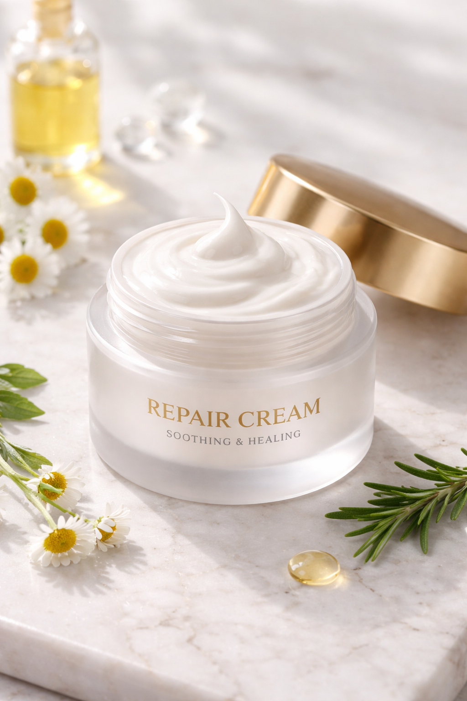
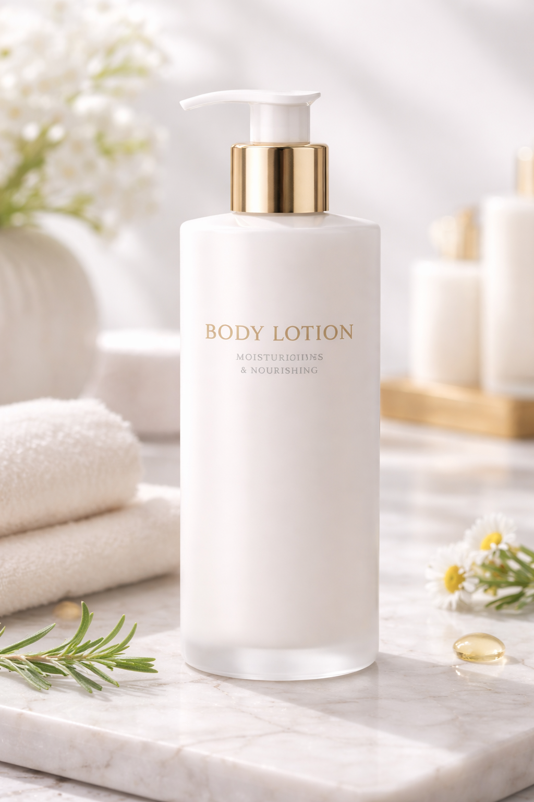
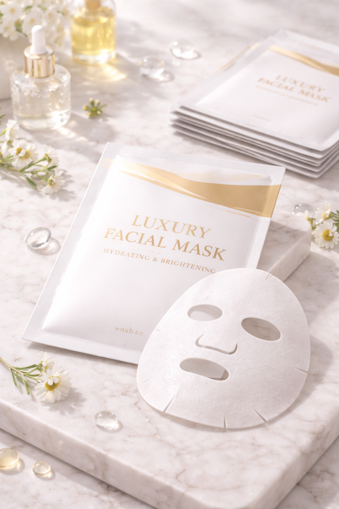

Balance
植萃平衡適應原乳霜
富含適應原草本成分，深層滋潤而不油膩，能有效穩定換季時的敏感肌膚。
「這款乳霜是我用過最溫和的，換季脫皮的狀況改善非常多，大推！」
— 林小姐 / 辦公室職員

Repair
植萃深層修護膏
萬用型修護配方，針對極乾燥部位提供即時補水，重建肌膚天然防禦屏障。
「成分很天然，擦在手肘乾裂處很快就吸收了，琥珀瓶身很有質感。」
— Jason L. / 產品經理

Hydrate
水潤煥活身體系列
輕盈如水的身體乳液，能立即緩解洗澡後的肌膚緊繃感，帶來全天候的水嫩觸感。
「味道是非常療癒的草本清香，每天晚上洗完澡使用都覺得壓力被釋放了。」
— 陳小姐 / 瑜珈導師

Night Care
夢境賦活晚安面膜
在您睡眠時進行深度修復，提升肌膚透亮感，隔日醒來如同做完高級SPA。
「熬夜後使用非常有感，隔天臉部完全沒有暗沉蠟黃，素顏氣